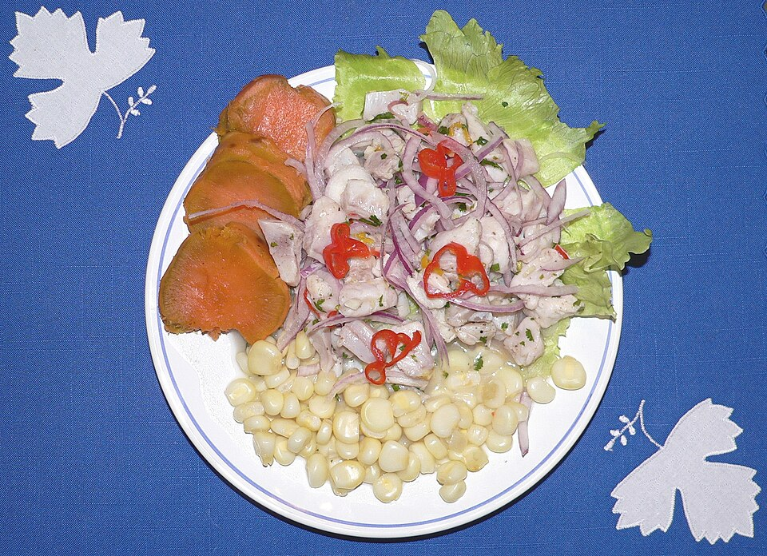

Centro de Control y Radar AIS en Tiempo Real
Detección anticipada de lanchas artesanales en la Bahía de Paita (Caleta La Islilla, Yacila y Tierra Colorada) y rastreo satelital del furgón de frío por la Autopista IIRSA Norte.


Embarcación en Radar
Telemetría Satelital AIS
Siempre San Pedro
PT-45210-BM (Paita) • Rumbo 118° ESECompra directa garantizada. Se transfiere al carrito para despacho en frío a las 05:00 AM.
Catálogo B2B y Comparativa de Precios
Eliminamos la intermediación parasitaria. Paga el precio justo del día y ahorra más del 30% garantizando frescura insuperable.
Pescado insignia del litoral piurano. Carne semi-firme para cebiche clásico y sudado.
Pulpa blanca y tierna sin espinas. Ideal para cebiche, chicharrón y milanesa marina.
Pota Manto Limpio
Dosidicus gigasManto blanco de 18 mm limpio y eviscerado. Cero amoniaco gracias al frío a 0.9 °C.

El rey del fondo marino norteño. Captura selectiva con espinel a 40 brazas. Carne perlada.
Carne delicada y nacarada de fondo arenoso. Corte perfecto para tiradito al ají amarillo.
Pescado costero de peña capturado a cordel. Insuperable entera frita, a la sal o en cebiche.

Langostinos enteros de gran calibre y cola firme para Arroz con Mariscos, Chupe y Jaleas.
Conchas frescas con coral naranja vibrante de Bahía de Sechura y Paita para parmesana y leche de tigre.
Resumen de Pedido de la Cebichería
Cálculo transparente de ahorro para el restaurante y retribución directa al pescador.
| Especie Marina | Cantidad | Precio Unitario | Total Pedido | Ahorro vs Intermediario | Acción |
|---|
Balanza Digital Industrial con Tara Automática
Acaba con la práctica corrupta del "machete" en el muelle (donde el acopiador descuenta 18.5%). La balanza Torrey serial RS-232 aplica estrictamente -2.5 kg por jaba plástica oficial.
Cabrilla Norteña
Manifiesto Digital de Pesaje
ESTÁNDAR SANIPESMonitoreo Térmico IoT en Furgón (Ruta IIRSA Norte)
Furgón isotérmico equipado con sensor sumergible DS18B20 IP68 y módulo celular 4G. Mantiene el pescado de Paita a Piura (58 km) a 1.4 °C cumpliendo el D.S. N° 040-2001-PE.
Ruta Express Paita - Piura (Autopista IIRSA Norte)
58 KM • TIEMPO: 48 MIN
Bóveda Escrow y Liquidación Instantánea Fintech
Elimina la desconfianza del efectivo de madrugada y los vales de papel a 15 días. El restaurante paga vía Yape, Plin o BCP; los fondos quedan en custodia virtual y se liberan al pescador en 2.1 segundos tras escanear el QR en la puerta de la cebichería.
Pedido y Depósito
Cebichería confirma lote de S/ 405.00 con Yape o Plin.
Fondos VerificadosBóveda Escrow
Dinero custodiado en cuenta protegida sin riesgo de impago.
Bloqueado en CustodiaEscaneo QR Destino
Chef de Piura verifica temperatura a 1.4 °C y escanea QR.
Validación ConformeLiberación al Pescador
Abono instantáneo al Yape/BCP de Don Pedro Chunga.
Liquidado en 2.1sCertificado Oficial Sanipes / PRODUCE con Hash SHA-256
Cada lote lleva un precinto QR que el comensal o el chef pueden escanear para verificar: embarcación de captura, nombre del pescador artesanal, hora de extracción, control térmico y sello sanitario.
Certificado de Procedencia y Cadena de Custodia
AUTÉNTICO
Calcula el Ahorro Real de tu Cebichería al Mes
Ajusta los kilogramos diarios que compra tu restaurante en Piura o Sullana (promedio del estudio de campo: 40 kg/día) y comprueba cuánto dinero dejas de regalar al intermediario.
Quienes Construyen PESCA-CLICK Todos los Días
Resultados medidos durante 15 jornadas consecutivas de madrugada (25 embarcaciones y 45 locales gastronómicos).
"Antes el habilitador me pagaba S/ 6.00 el kilo y en su balanza me robaba hasta 8 kilos por jaba. Hoy vendo mi cabrilla antes de llegar al muelle a S/ 13.50 exactos y cobro en mi Yape en 2 segundos."

"Recibo la cabrilla a las 06:30 a.m. en mi cocina marcando 1.4 °C reales, 3 horas antes que los mercados tradicionales y ahorrando 31.8% cada semana. El comensal siente la firmeza en el cebiche."

"Desde altamar reporto los kilos de tollo sin gastar saldo. El furgón frío nos espera en el muelle y ya no se malogra ni un kilo bajo el sol de la carretera."